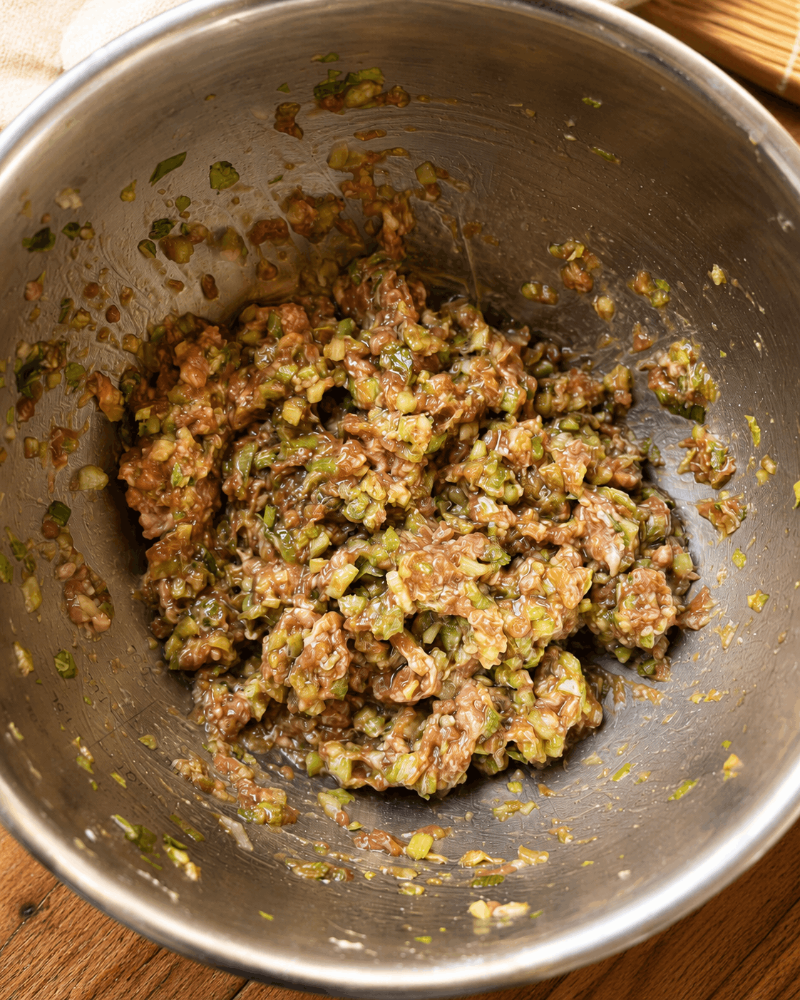
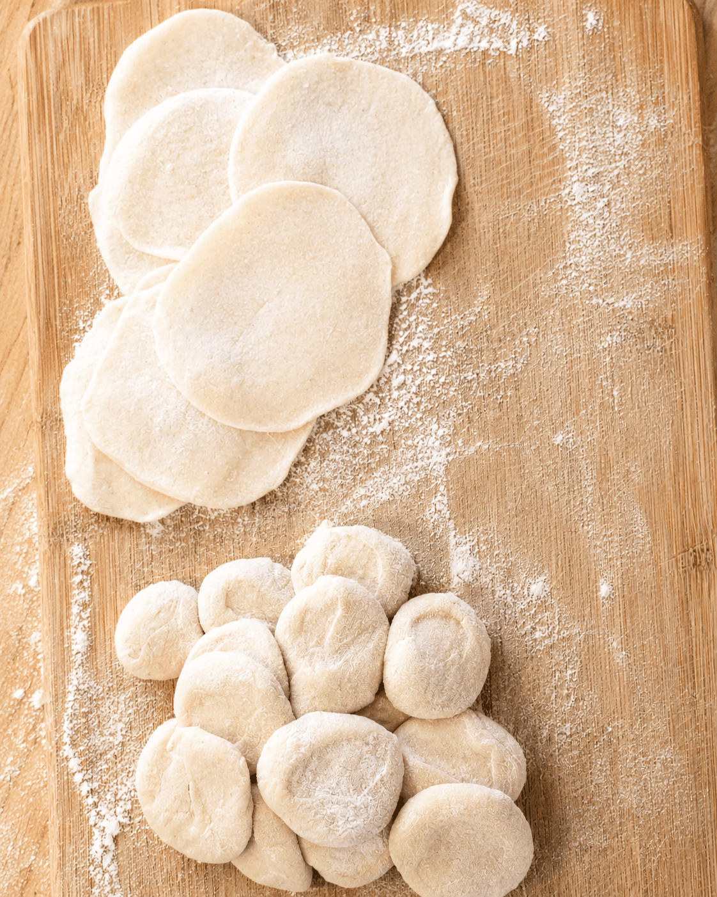
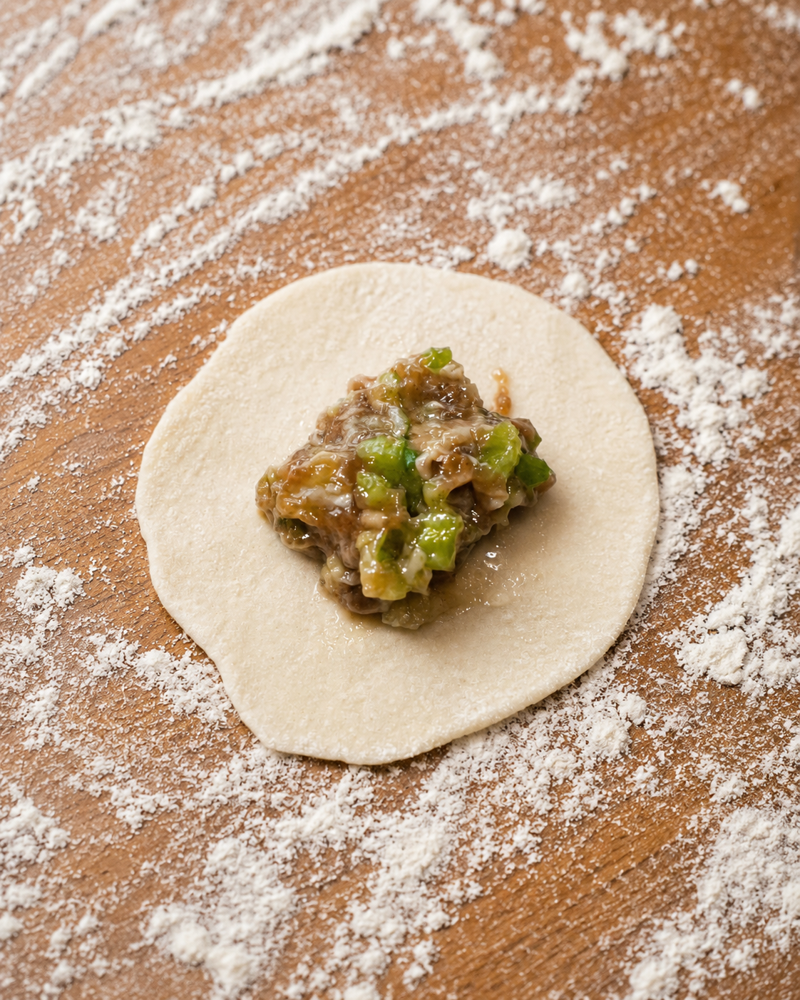

With Chinese New Year coming up, Dumplings are a MUST! Dumplings are one of the hardest dishes I have ever learned how to make. I started trying to make dumplings when I was 12 with my parents, but every time my mom would tell me I was doing something wrong. The dough was too thick, the wrapper was uneven, or I didn't seal it tight enough.
After years of watching, messing up, and trying again and again, I started to understand the process and eventually mastered it (but occasionally I still wrap a dumpling a little loose and it falls apart in the boil). The process takes time, but that's what makes it so rewarding and fun. Hopefully these steps make it easier, because once you try a plate of homemade dumplings, it's completely worth it.
Finely cut the celery and green onion. Finely mince the ginger. Set aside.
Add the ground pork to a large bowl. Add soy sauce, dark soy sauce, white pepper powder, sesame oil, cooking oil, and chicken stock. Mix everything together thoroughly.
Add the celery, green onion, and ginger into the pork mixture. Stir until fully combined. Set the filling aside.
In a bread maker, add 5 cups of all-purpose flour and 2 cups of water. Run on the dough setting for 20 minutes until it forms a smooth dough.
Leave the dough in the bread maker for 1 hour to rest and soften up. This makes it much easier to work with.
Dust a cutting board with flour. Knead the dough into a round shape, then cut it into four equal pieces. You'll work with one quarter at a time.
Roll one quarter of the dough into a long snake shape. Cut it into small, equal-sized chunks.
Press each chunk into a flat circular shape with your palm. Using a rolling pin, roll each piece into a round dumpling wrapper. Keep the edges thin and the center slightly thicker so it can hold the filling without breaking.
Place a spoonful of filling in the center of each wrapper. Fold in half and pinch the edges together tightly so they don't open up in the water.
Bring a large pot of water to a boil. Add the dumplings.
When the water comes back to a boil, add one bowl of cold water. When it boils again, add another bowl of cold water. When it boils a third time, the dumplings are done.
Remove from the water and serve immediately. Good with soy sauce, vinegar, or chili oil on the side.
Photos from my kitchen



Comments
2 comments
I made these for Chinese New Year and they were a hit!
First time making dumplings from scratch and this recipe made it so much less intimidating.
Leave a comment